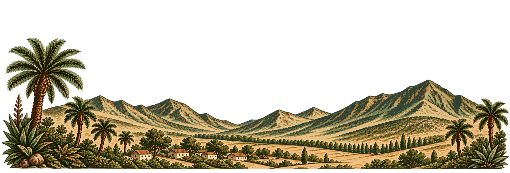
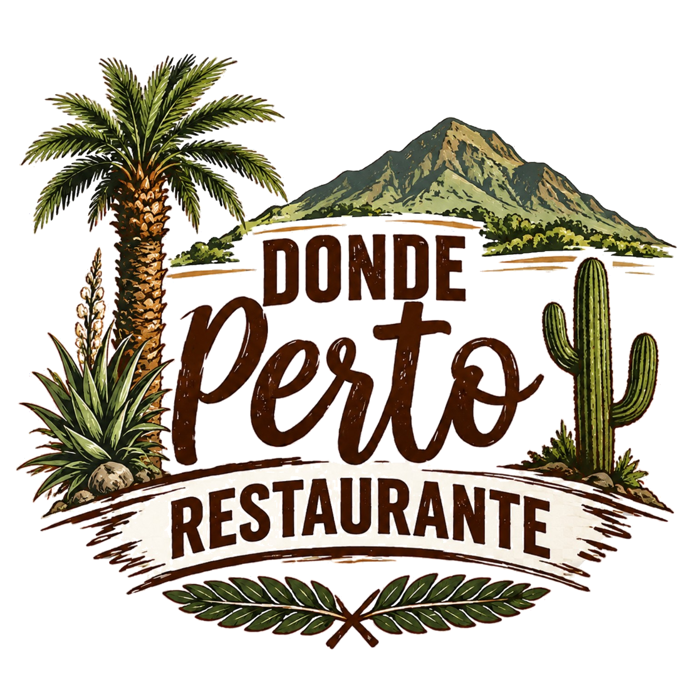

Sabores caseros
en el corazón de Olmué
Mostrar carta
Donde Perto
Cocina familiar
Nuestros platos
Filete de choclo
$11.500
Cazuela de vacuno
$11.500
Guatitas
$12.500
Carne al jugo
$11.000
Chuleta vetada
$10.500
Carne con pastelera
$13.500
Chunchules
$13.500
Costillar
$16.000
Arrollado
$18.000
Pernil
$19.500
Lomo pobre
$15.000
Pollo al horno
$8.000
Salchipapas
$7.000
Papas fritas
$7.000
Conejo
$18.000
Prietas artesanales
$10.500
Lasaña
$10.000
Agredados
Arroz
Puré natural
Papas mayo
Ensalada
Consomé
Papas fritas
$2.500
Empanadas
Pino carne picada
$2.500
Queso
$3.000
Champi queso
$3.000
Jamón queso
$3.000
Tomate queso albahaca
$3.000
Bebidas
Bebida individual
$2.500
Jugo natural
$4.000
Agua
$2.000
Té o café
$2.000
Vino chico
$3.500
Vino grande
$10.000
Cerveza
$4.500
Volver a portada